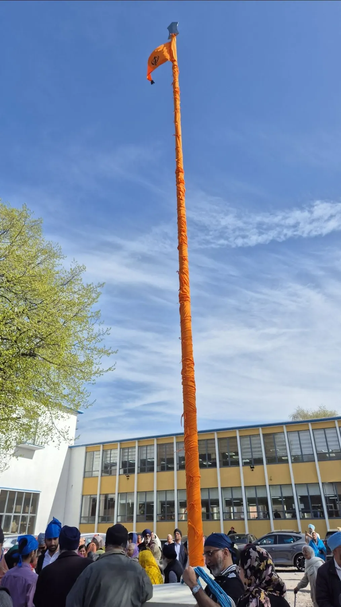
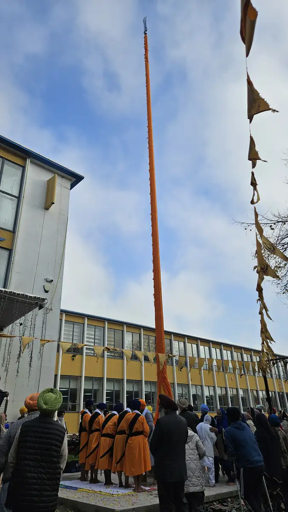
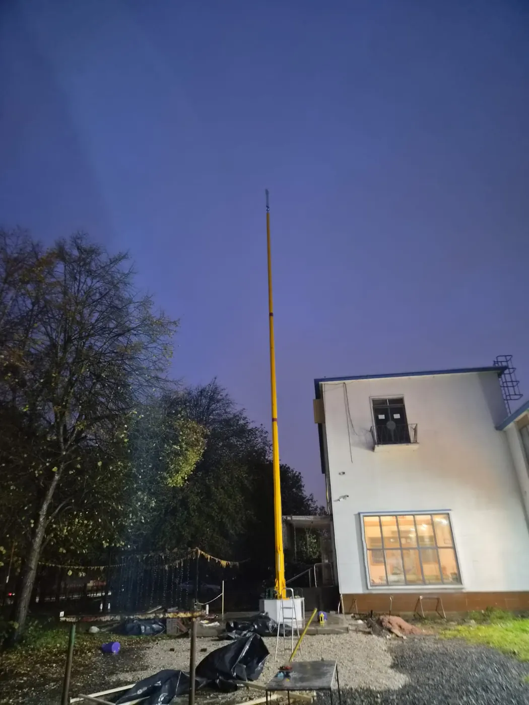
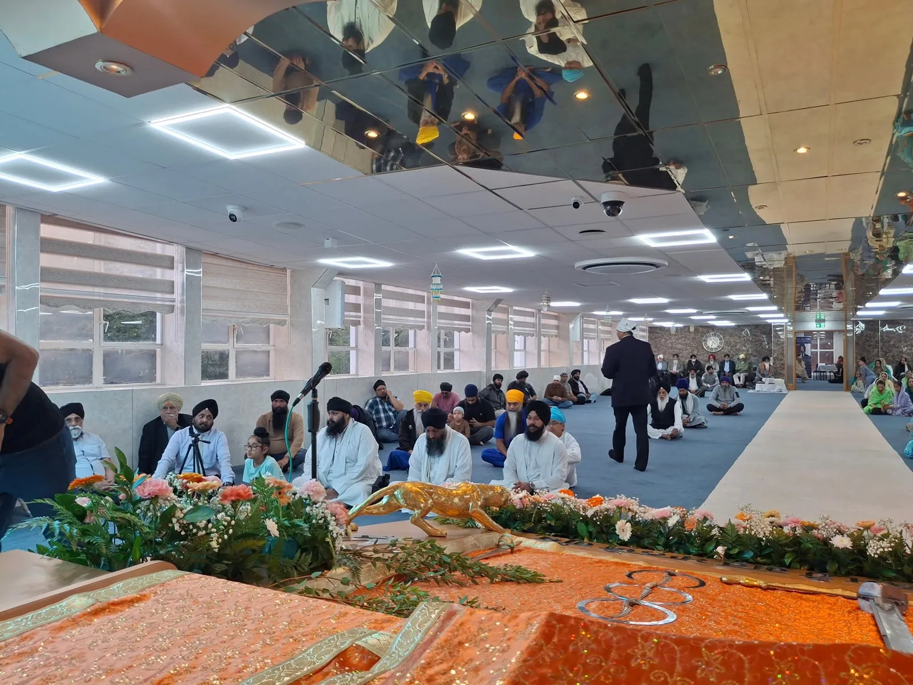

News & updates
Seva, building works and life at Guru Ka Niwas, shared by our sangat.
Coming up at the Gurdwara
- Sat 14 Nov · 5.00pm – 9.00pm Mahaan Kirtan Darbar, Mata Sahib Kaur Ji’s Avtar Purab

Our new Nishan Sahib is raised
Ishnaan seva, the new Chola Sahib, Ardas and the moment the Nishan Sahib rose into the sky. The day in photos.
See the photos →
A new foundation for our Nishan Sahib
From Ardas and groundwork to the steel cage, the concrete pour and the evening the Nishan Sahib was raised. The whole seva, step by step, with photos and video.
Read the story →
Fifty years of Guru Ka Niwas
The Golden Jubilee of the Ramgarhia Board Gurdwara, 1975–2025: honouring the founders and celebrating with the whole sangat.
Read the story →More updates from the Gurdwara will appear here. For photos and videos shared by the sangat, see Guru Ka Niwas on Instagram ↗
The sangat on Instagram
Kirtan, programmes and seva at Guru Ka Niwas, as shared by the sangat, jathas and organisers.
Images and videos belong to the accounts shown and open on Instagram. To have a post removed, please contact the Gurdwara.
Recent programmes & seva
- 20 Sep 2026Dhadi Jatha at GKN
A visiting international dhadi jatha performed for the sangat, 11.30am–12.30pm.
Facebook ↗ - 31 Jul 2026Monthly Wolverhampton Youth Kirtan
The monthly Friday Youth Kirtan, 7.30–9.30pm, organised by Wolverhampton Youth Kirtan.
Instagram ↗ - Jun 2026Kaur Forum
Kaur Foundations’ June Kaur Forum, with a talk by Bibi Gurveen Kaur on the Shaheed Bibiya of 1984.
Instagram ↗ - 15–18 Jun 2026Shaheedi Smagam & Sri Akhand Paath Sahib
A four-day smagam in remembrance of the shaheedi of Sri Guru Arjan Dev Ji.
Instagram ↗ - 30 May 2026Akhand Kirtan and Youth Kirtan
An Akhand Kirtan programme and Youth Kirtan in the Darbar Sahib.
Instagram ↗ - Oct 2025Bandi Chhor Divas
The sangat lit diyas and gathered outside the Gurdwara to celebrate Bandi Chhor Divas.
Photos →
Shared by the sangat and organisers on social media. Follow Guru Ka Niwas on Instagram ↗